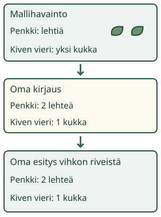

Mallihavainnosta vihkon kautta toiselle
Aava katsoo kahta mallipaikkaa. Loikka ei katsonut niitä. Miten tieto kulkee havainnosta vihkoon ja vihkosta esitykseen?
Yhdistän oman kirjauksen ja esityksen niin, että ne kertovat saman havainnon.
Pidä tiedon ketju ehjänä
Katso tuttuja paperiesineitä kahdella pöytäalustalla. Kirjaa paperille, mitä kummallakin näkyy. Tee sen jälkeen merkintöjesi avulla pieni esitys parille. Voit näyttää asian kuvalla, määrällä tai osoittamalla. Kuvat ovat merkintöjä esineistä: oikeat esineet jäävät alustalle.
Tässä yhdistämme kaksi aiempaa taitoa: havainnon kirjaamisen ja sen esittämisen toiselle. Yksi oikea vihkon rivi tai oikean näköinen esitys ei vielä tarkista koko yhteyttä.

Esimerkki: sama määrä kahdessa muodossa
Penkillä näkyy mallissa kaksi lehteä. Vihkon Penkki: lehtiä -riville merkitään 2. Kun tämä rivi valitaan esitykseen, siinä on Penkki-otsikko ja kaksi lehden kuvaa. Selite kertoo: yksi kuva tarkoittaa yhtä mainittua asiaa. Kiven vieressä on yksi kukka; sen tieto saa oman rivin.
Esimerkki: uskollinen kopio voi silti jatkaa virhettä
Jos vihkoon merkitään vahingossa kolme lehteä, esityskin näyttää kolme. Se vastaa vihkoa, mutta ei mallihavaintoa. Pelkkä vihkon ja esityksen samanlaisuus ei riitä. Palaa lähteeseen ja korjaa ensin kirjaus. Esitys seuraa korjattua vihkoriviä.
Ansakohta: yksi rivi kahteen kertaan
Jos esitykseen valitaan Penkki-rivi kahdesti, Kiven vieri -rivi puuttuu. Vaikka vihko olisi oikein, toinen lukija ei vielä näe kaikkia tietoja. Valitse jokainen tarvittava vihkorivi kerran. Eri paikoissa voi olla sama määrä; silloin sama luku saa näkyä useasti.
Ennusta: jos muutat vihkon yhtä lukua, mitä sen rivin esitykselle pitäisi tapahtua? Kokeile ja vertaa malliin.
1. Kirjaa mallihavainnot
Kuvitteelliset mallihavainnot: kaikki nimetyt paikat on katsottu. Nimet annetaan valmiina. Nämä eivät ole sinun tekemiäsi retkihavaintoja.
1. Katso mallipaikkoja
2. Kirjaa omaan harjoitusvihkoon
Merkitse kunkin paikan määrä. Saat antaa luvun suoraan katsomalla kuvaa; esineitä ei tarvitse napauttaa. Tyhjä ruutu ei ole nolla. Nolla merkitään vain, kun mallissa katsotussa paikassa ei ole yhtään kyseistä asiaa.
Omat merkintäsi säilyvät, kun jatkat esityksen kokoamiseen.
2. Kokoa esitys kirjauksistasi
Omat vihkorivit
Vertaa esitystä omiin kirjauksiisi. Voit muokata samoja vihkorivejä alla. Esitys seuraa kirjauksiasi, myös puuttuvaa tai virheellistä merkintää.
3. Kokoa esitys vihkosi riveistä
Valitse kuhunkin esitysriviin yksi vihkorivi. Käytä jokaista mallipaikkaa kerran.
Tee kirjaus ja kokoa esitys.
Apua tiedon seuraamiseen
Seuraa yhtä paikkaa kerrallaan. Mitä mallikuvassa näkyy? Onko vihkossa sama määrä saman paikan kohdalla? Löytyykö esityksestä juuri tämä vihkorivi? Voit korjata yhtä kohtaa poistamatta muita oikeita tietoja. Aikuinen voi lukea ohjeet. Ääneen vahvistamista ei vaadita.
Merkinnät ovat vain tämän harjoituksen muistissa. Niitä ei tallenneta, kun poistut tai alustat työn.
Muokkaa omia kirjauksia tässä
Malli on ilman JavaScriptiä alkuperäisessä kohdassaan: avaa mallin kohta.
Uusi tilanne: samat määrät ja nolla
Toisessa tilanteessa mallipaikat ja asiat vaihtuvat. Kolmannessa kahdessa paikassa on yhtä monta lehteä. Kiven vieressä ei ole yhtään kukkaa, vaikka paikka on katsottu. Tämän mallin nolla ei siis tarkoita, että havainto olisi tekemättä. Kirjaa tieto ja tuo se mukaan esitykseen.
Voit näyttää esityksen taulukkona tai kuvamerkkeinä. Myös toinen rivijärjestys on oikein, kun paikat, asiat ja määrät pysyvät yhdessä. Yksi esitystapa ei ole ainoa oikea.
Jatka alla samoja kirjauksiasi. Harjoituksen ”Toinen tilanne” aloittaa uuden tilanteen; näkymän avaaminen ei vaihda tai tarkista tietojasi.
Jatka omia kirjauksia tässä
Malli on ilman JavaScriptiä alkuperäisessä kohdassaan: avaa mallin kohta.
Lisätutkimus ilman ruutua
Tehkää aikuisen kanssa oikea pieni havainto kahdelta alustalta. Aloittakaa tyhjällä paperilla ja kirjatkaa vain se, mitä oikeasti näkyy. Antakaa vihko parille, joka kokoaa sen avulla esityksen. Palatkaa lopuksi esineiden luo tarkistamaan koko ketju. Jos jokin havainto jäi tekemättä, älkää merkitkö sitä nollaksi.
Opettajalle: integraatio ja näytön rajat
Vuosiluokat 1–2. Kanoninen rooli ja noodityyppi ovat integraatio. Vaadittu AND-ryhmä on SCI-ENV-RECORD-DATA-01 ja SCI-ENV-PRESENT-DATA-01. Niiden erilliset onnistumiset eivät yksin täytä integraatiotavoitetta. Tämä työ yhdistää niiden merkityksen yhden mallihavainnon, oman kirjauksen ja esityksen suhteena.
Otsikot, nimet, paikat ja esityksen yhden merkin selite ovat annettua tukea. Oppilas kirjaa pieniä määriä 0–3 ja kokoaa oman vihkonsa riveistä rajatun esityksen. Tuki lukemiseen tai lukujen tulkintaan on sallittu. Vapaata esitysrakenteen suunnittelua, pitkää kirjoittamista, muistista palauttamista tai lajien nimeämistä ei oleteta.
Valittu esitysrivi seuraa nykyistä vihkomerkintää. Kirjauksen muuttuminen muuttaa myös sen esityksen sisältöä ja poistaa vanhan tarkistuspalautteen. Kuvan ja taulukon vaihto tai tietoja säilyttävä rivijärjestyksen vaihto ei tee oikeista tiedoista vääriä.
Tarkistus vertaa koko ketjua malliin. Se ei todista, että toinen ihminen ymmärsi esityksen, eikä korvaa erillistä käytännön soveltamisnäyttöä. Mallihavaintoja ei väitetä lapsen oikeiksi havainnoiksi. Ruudun onnistuminen ei anna muodollista mastery-tilaa, todista fyysistä tutkimusta, itsenäisyyttä, säilyvyyttä tai oppimisvaikutusta. Ei tallennusta, pisteitä tai henkilöhistoriaa.
Lopuksi
Näytä yhden tiedon kulku mallikuvasta vihkoon ja esitykseen. Mistä tarkistaisit virheen, jos vihko ja esitys näyttävät samaa mutta mallikuva eri määrää?